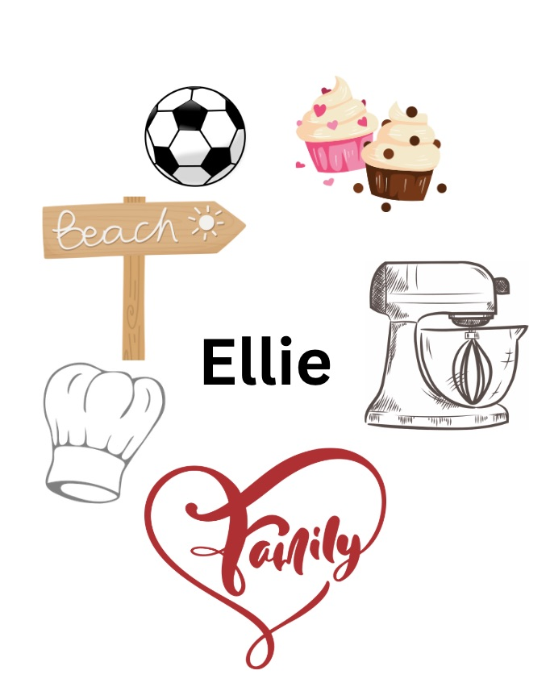

My name is Ellie Fourfouris and I am a student at the Australian Catholic University.

My name is Ellie Fourfouris and I am a student at the Australian Catholic University.
My name is Ellie Fourfouris. I am currently in my third year of studying a Bachelor of Education (Secondary)/ Bachelor of Arts (Design Innovation and Technologies) at Australian Catholic University. I am majoring in Food Technology and minoring in Textiles. I am passionate about food, cooking and educating young minds about the significance of food and the various ways it contributes to our lives. By combining theory with handsn on experiences, I encourage students to apply their knowledge in meaningful ways, developing both technical skills and critical thinking. I view Food Technology as an opportunity to empower students with lifelong skills—such as food preparation, nutrition literacy and safe work practices that enhance personal wellbeing and contribute to community health.
hfjkehfkuehfekf
| School | Subjects Taught | Year Level | Term |
|---|---|---|---|
| Trinity Catholic College | Stage 5 Food Technology, Stage 6 Hospitality | Year 9-12 | Term 2, 2024 |
| Georges River College, Peakhurst | Stage 4 Technology Mandatory - Textiles, Stage 5 Food Technology, Support Unit - Food Technology | Year 7-10 | Term 4, 2024 |
| Holsworthy High School | Stage 4 Technology Mandatory - Woodwork and Food Technology, Stage 5 Food Technology | Year 7-10 | Term 2-3, 2025 |